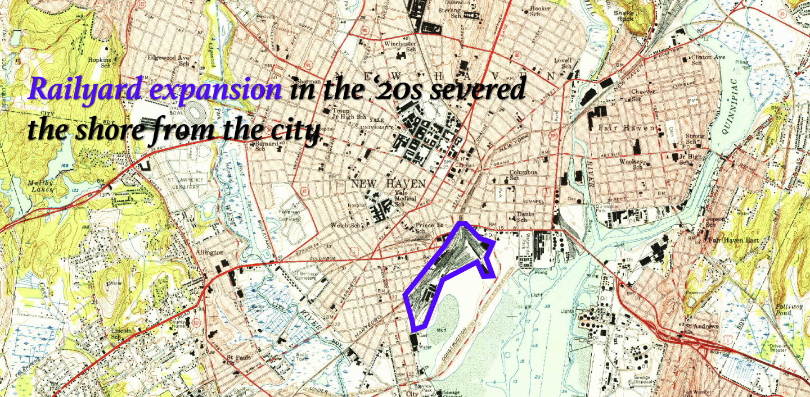

Paradise can be found along the abandoned New Haven shore …
Where cultures and flavors meet …
This is New Haven's Food Truck Paradise …
Will THE SAVIORS OF NEW HAVEN'S SHORE BE FORGOTTEN?
Story by Pranava Dhar
When the first vendors came to Long Wharf, it was abandoned marshland.
Today, walking through on a Sunday afternoon, you can hear a constant chatter of Spanish, kids playing, couples canoodling, and orders flying.
La Patrona, a popular option at the 'Food Truck Paradise'
This tiny corner of New Haven's culture has seen a spurt of popularity over the past decade, as a popular rest-stop off of Highway I-95.
So much so that even someone even added a marker on Google Maps for a 'Food Truck Paradise' to the place where the trucks usually assemble in Long Wharf
The name stuck and in 2016, New Haven mayor made the name official, explaining that "We call it ‘Food Truck Paradise’ because that’s what Google calls it"
The food trucks have successfully helped revive a forgotten part of New Haven. But it is uncertain if the city wants to keep them in its future.
How the shore was forgotten
Downtown New Haven is only a 7 minute car ride or a 30 minute walk away from the New Haven shore
Distance on Google Maps
During colonial times, New Haven used to be a very important port
The shore was considered a, if not the, critical piece of New Haven's economy and identity.
New Haven, 1786
Yet today, people living in New Haven don't seem to think about the shore at all.
I honestly forget we live on the Atlantic Ocean
Charlotte Hawes, Yale Student
You don't really come live in New Haven for the beaches
Evan Gorelick, New Havener
To understand why, we must delve into New Haven's history, documented in maps of the US Geological Survey.

New Haven hasa shore???
Zoe Mohaupt, Yale Freshman
I didn't realize we were on the water till I heard the seagulls
Pranava Dhar, Yale Junior
As the shore seemed forgotten, it became an area for the city to dump its negative externalities.
Consider the New Haven Harbor Station, for example
In 1975, the city innaugrated this power plant just opposite Long Wharf, on New Haven's East Shore
The plant's construction had been hastily completed just two years before Congress amended the Clean Air Act in 1977, allowing it to be grandfathered in.
In the early 2000, it was revealed the New Haven Harbor Station had been spewing pollution into the local communities for decades. The plant was subsequently met with protests calling for its shutdown as well as that of the other grandfathered 'Sooty Six.'
Yet, the city continues to drag its heels. While there have been improvements made to the the plant, it remains one of New Haven's top polluters to this day.
Similar is the story of New Haven's Tweed Airport.
Tweed, situated amidst residential neighborhoods, has long been a source of contention among local residents.
For those who live nearby in East Haven, the Airport's operations pose significant challenges, ranging from increased noise pollution to concerns about air quality and safety.
For the past years, Avports, a Goldman Sachs subsidiary and current operator of the airport, has been pushing to expand the airport further into East Haven for a $100 million project.
This expansion is expected to not only increase noise pollution and environmental degradation, but also destroy East Haven's wildlife-rich wetlands
Despite being fraught with these environmental and residential problems, the city has pushed through the masterplan, with hopes to expand New Haven as a regional hub.
The New Haven Harbor Station and Tweed Airport highlight the city's historical attitude towards New Haven's shore and the people around it: apathy and unconcern.
The first food trucks came to Long Wharf nearly 25 years ago. Given the area's disuse and disregard by the city, they could exist here without trouble.
Tacos at the Wharf
The food truck vendors and the community that has grown around them has revived Long Wharf.
The first 'Food Truck Festival' in Connecticut was organized to celebrate the Long Wharf vendors in 2015, signifying the growing mainstream success of the trucks.
But having seen the success of the Food Truck Paradise as proof of Long Wharf's potential, the city is now looking past the food trucks.
In 2019, the city unveiled the Long Wharf Responsible Growth Plan which envisions Long Wharf transformed into "a vibrant waterfront neighborhood."
A mock-up of the envisioned Long Wharf Responsible Growth Plan
This initiative seeks to further capitalize on the area's newfound popularity by integrating mixed-use spaces, recreational facilities, and cultural attractions.
It's unclear if these new plans include a space for the foodtrucks that made it possible for the city to revive the area
What the Long Wharf Plan might mean for the Food Truck Paradise
Some residents of the largely white neighborhoods near the Wharf have expressed strong opinions that their surroundings should not be defined by the 'brash' trucks in these new plans:
If you haven’t been down there recently, take the trip and see if you agree that waterfront planning shouldn’t revolve around a parking lot full of aging food trucks — New Haven resident
Will the food trucks have space to exist on the shore they brought back to life?
The evolution of Long Wharf through the Food Truck Paradise has been a success story against the expectations of the city.
From being forgotten, the New Haven shore has transformed into a bustling community hub, drawing diverse crowds to enjoy culinary delights against the backdrop of New Haven's waterfront.
Yet, as the city pursues redevelopment plans for Long Wharf's future, the fate of the food trucks remains uncertain. While the vision for mixed-use spaces and cultural attractions is promising, it's essential to preserve the unique charm that these trucks have brought to the area.
Credits
Written by: Pranava Dhar
Cover images from the web + my photograph (third on the cover)